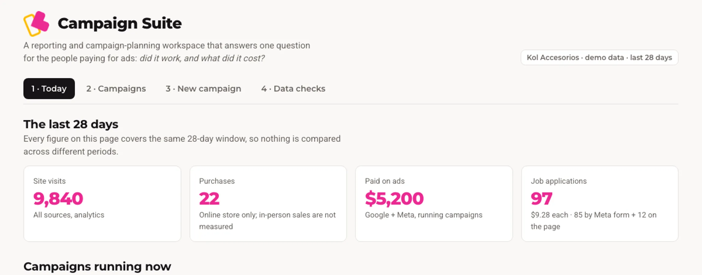

Débora Malqui
Posicionamiento SEO, GEO y AEO · Campañas de Google y Meta
Trabajo como freelancer en posicionamiento SEO, GEO y AEO, y creo campañas de Google y Meta con objetivos distintos, de recursos humanos y de ventas, y construyo con IA las automatizaciones que las miden. Vengo del diseño de producto digital y, en una agencia de Malta, del marketing clásico y las redes sociales, donde manejé el diseño de 30 marcas con tres pasantes a mi cargo.
Reconocimientos y colaboraciones
Casos
Campañas, automatizaciones y productos digitales.
Campañas que traen candidatos y visitas
505 postulaciones en 28 días y un +69 % de visitas al sitio, con campañas de Meta y Google para una cadena de accesorios.
Leer el caso
El tablero para que todo el equipo vea qué trae cada campaña
Mi propio producto de medición, ya vendido a la marca: del CEO a cada área, todos ven qué costó cada campaña y qué trajo.
Leer el caso